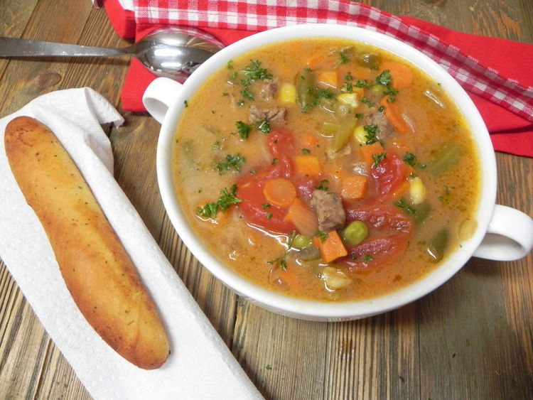

Kansas City Steak Soup

Introduction
This delicious Kansas City steak soup is quite famous locally. No need for a chilly winter day to enjoy this soup.
This big-batch recipe makes 16 servings, and it freezes well!
Ingredients
- 1 cup butter
- 1 cup all-purpose flour
- 8 cups water
- 1 (16 ounce) package frozen mixed veg
- 1 large onion, chopped
- 1 large carrot, diced
- 1 stalk celery, diced
- 12 cubes beef bouillon
- 2 tablespoons butter
- 1 pound round steak, chopped
- 3/4 teaspoons ground black pepper
Steps
- Melt 1 cup butter in a large stockpot over medium-low heat. Whisk in flour and stir until mixture becomes paste-like and light golden brown, about 5 minutes.
- Gradually whisk in 2 cups water and bring to a simmer over medium heat. Cook and stir until mixture is thick and smooth, 10 to 15 minutes. Add remaining 6 cups water, frozen vegetables, tomatoes, onion, carrot, celery, and bouillon cubes.
- Melt 2 tablespoons butter in a large skillet over medium heat. Add steak and brown on all sides, 3 to 5 minutes. Drain grease, then transfer steak to the stockpot. Bring to a boil, then reduce the heat and simmer, stirring occasionally, until vegetables are tender, about 1 1/2 hours. Season with pepper.
Home